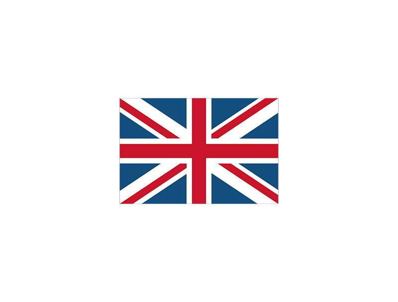
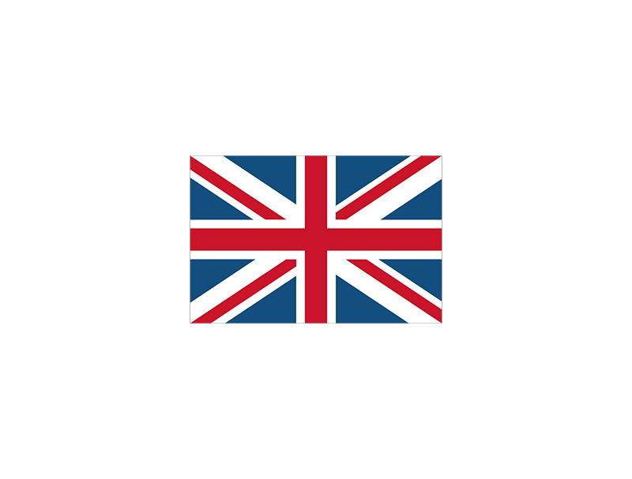
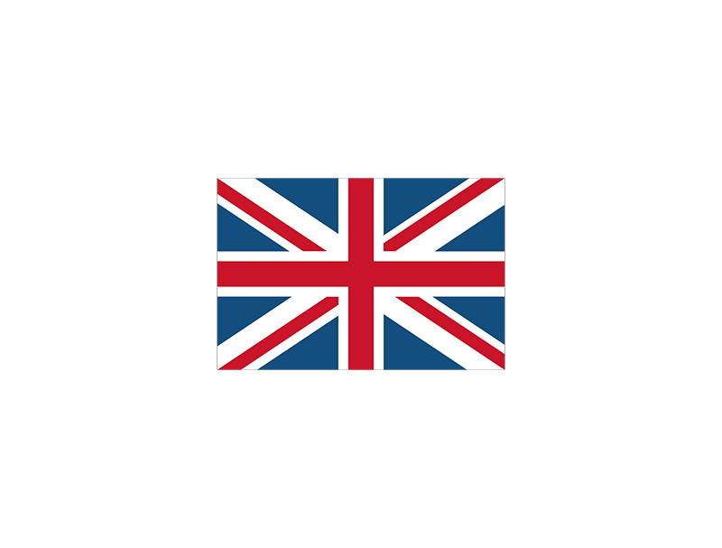
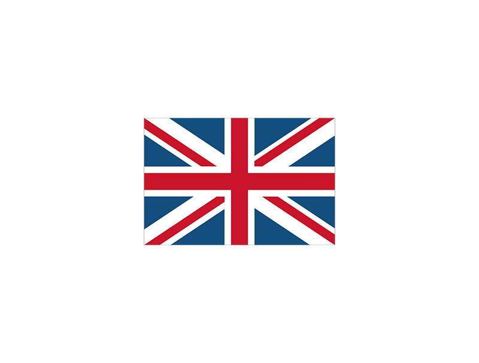

Le Mirage F1C est la version de chasse principale, avec un nez redessiné afin de loger le radar Cyrano IV. Après le 84e exemplaire, une autre version, ravitaillable en vol, apparaît : le F1C-200, rallongé de 7 cm. La production totale atteindra 168 exemplaires pour la seule armée de l'air. Ils furent retirés du service en 2012.

Le Mirage F1CT fut l'ultime variante du Mirage F1. 55 Mirage F1C-200 sont remis à niveau et optimisés pour l'attaque au sol et prennent le nom de Mirage F1CT. Le canon gauche est remplacé par 2 caméras, en plus de leurs télémètres laser. Ils entrèrent en service le 6 novembre 1992, et furent finalement retirés du service en 2012.
Le Mirage F1CR est une version de reconnaissance destinée à remplacer les Mirage IIIR, et vole dès le 20 novembre 1981. Elle entra en service en 1983, et est équipée de caméras Omera 33 et 40. Leur canon droit est remplacé par un capteur infrarouge. En tout, 43 exemplaires furent construits. Il en existe une variante qui fut proposée sans succès à l'exportation, le F1R. Ils furent retirés du service en 2012.

Version bi-place d'entrainement du Mirage F1. Cette version servait a entraînait les pilotes au pilotage d'avion supersonique et elle leurs servait également a apprendre tout les différants systémes d'arme avant leurs brevetage de pilote de chasse.